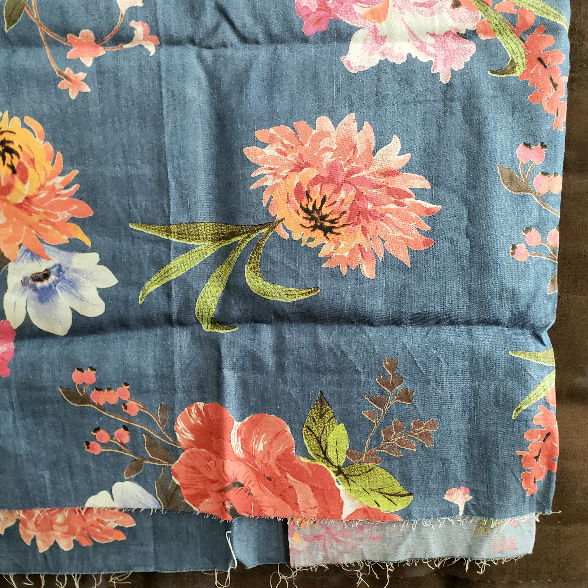

Etsy
I started shopping for fabric on Etsy hoping to find it cheaper than at a fabric store. I have definitely found some shops that exceed all expectations!
CountryCottageFabric
I found this shop on Etsy and they have amazing quality fabrics. They have the best prices for quilting fabric I have seen. I bought several yards of quilting cotton and batiks, and one of the 1-yd cuts I bought was extra long (about a yard and a half). I did make a bag out of the fabric I bought and it turned out great. I haven't tried ordering directly from their website yet.
Sew Yeah Quilting
Sew Yeah has the best quality of fabric, at a regular market price. They sometimes have discounts and deals in their email newsletter, and a flat rate shipping fee. I love their fabric and they also sell great thread and sewing notions. 90% of my fabric stash is from Sew Yeah. They also have a great variety of fabrics!
Jo-Ann
I've found some great deals on fabric here because I go to the clearance shelf that has end-cuts of fabric. I've also bought some minky to use for quilt backing, which was good but it's not the best quality. They do have a very large selection of specialty fabrics, and some of them are good but I feel they are overpriced. Now I only go to Jo-Ann for the clearance fabric. This is a picture of some end-cut fabric that I've used to make several bags.
TuesdayBlissFabrics
This is another Etsy shop that I love. They have woven and knit fabrics at an amazing price. I ordered some sweater knits
from this shop and they are true to the descriptions and good quality!
TuesdayBlissFabrics is also on several social media platforms including Pinterest.
There are a few other Etsy shops that are similar and I'll list those below.
Other shops to check out:
itsFabrics
Milanfabrics
ModHandcraft